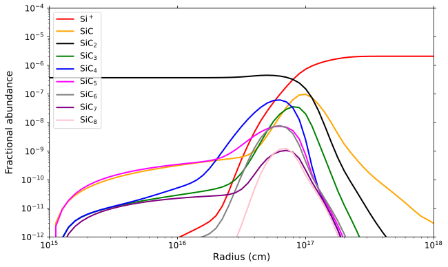
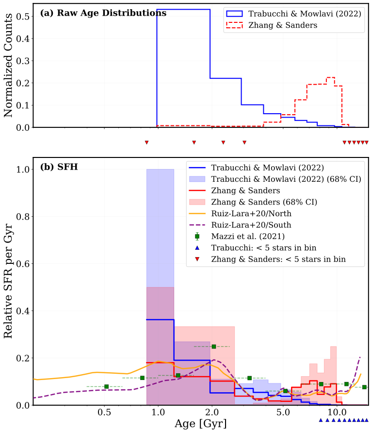
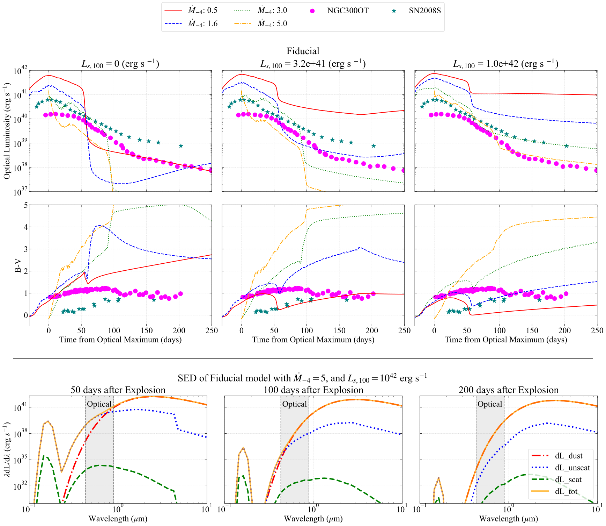
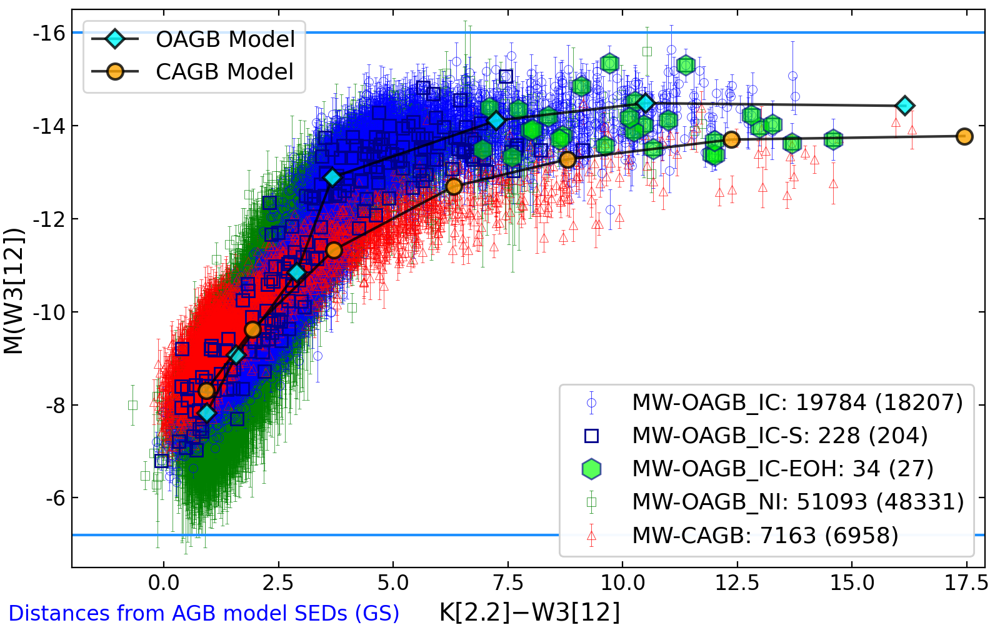
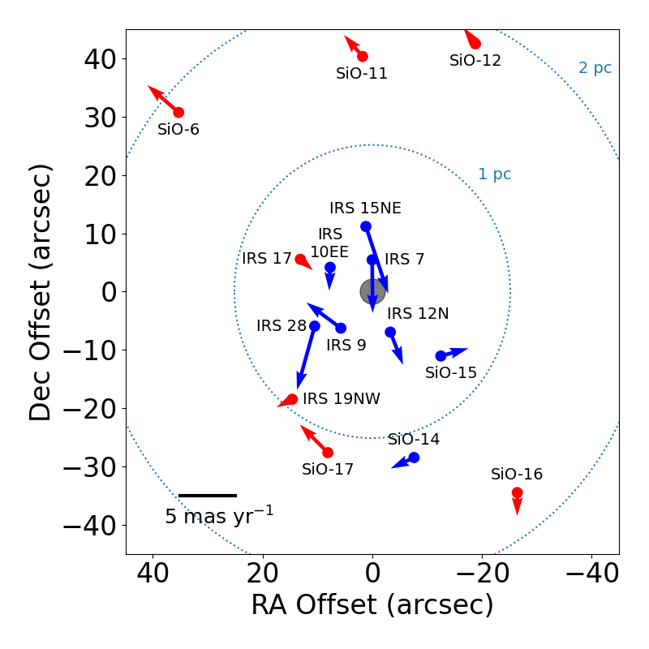
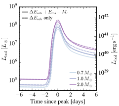
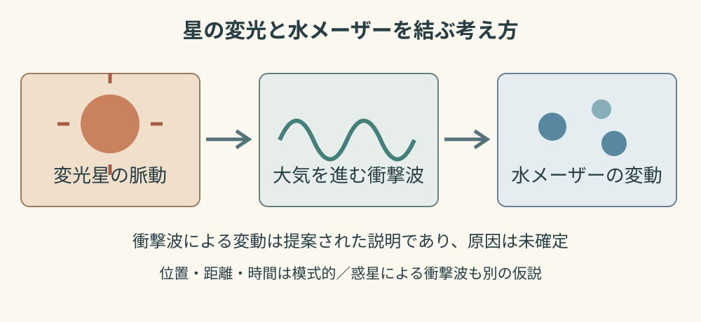

星周化学 / 2610.36369
星のまわりで、分子の鎖はどこまで長くなるのか
Millarは炭素星IRC+10216の化学反応網を計算し、観測済みの分子と未検出の長い鎖を比較しています。

Astronomy, notes & essays
Research Watch
天文学の論文から、いま面白い問いを読む
私が関心を持った、他の研究者による天文学・天体物理学の論文を紹介します。原著論文をもとに、研究の背景、主な結果、残された課題を専門外の方にも分かるようにまとめています。
中島本人と共同研究者の成果は「研究成果」で紹介しています。
他の研究者の論文を読む · 観測、理論、計算の最前線
全16記事 · 更新
星周化学 / 2610.36369
Millarは炭素星IRC+10216の化学反応網を計算し、観測済みの分子と未検出の長い鎖を比較しています。

大マゼラン雲・恒星進化 / 2610.37385
SchultheisらはAGB星の脈動と化学組成を使い、大マゼラン雲の星形成史を二つの年齢較正で調べています。

超新星・ダスト / 2610.37574
Takeichiらは爆発の光とダストの相互作用を計算し、赤い突発天体の明るさと色を同時に説明できるか検討しています。

AGB星・赤外線 / 2610.33991
Suhは銀河系と大マゼラン雲の酸素過剰AGB星を比較し、銀河系の70,877天体を収めたカタログを提示しています。

銀河中心・位置天文学 / 2610.31766
Darlingらは銀河中心の15個のSiOメーザー星の30年の観測を統合し、位置の基準とその限界を調べています。

連星・恒星合体 / 2610.31755
Leonhardes-Barbozaらはベテルギウスに伴星が存在し合体すると仮定し、その初期の光を計算しています。

変光星・メーザー（2002年の研究） / 10.1071/AS02018
Rudnitskijの2002年の論文は、水メーザーの変動と衝撃波の関係を論じています。

惑星状星雲・分子化学 / 2610.30441
ClarkらはJWSTでNGC 6302のPAH放射を比較し、場所による違いから分子の状態と形成過程を議論しています。

恒星進化・連星 / 2610.29323
Bhattacharjeeらは、衝撃波に支えられた巨大星の大気をモデル化し、ロッシュローブを満たす前の質量移動を予測しています。
天体化学・機械学習 / 2610.30842
Vargasらは、TMC-1の既知分子から構造と柱密度の関係を学習し、未検出分子の探索候補を提示しています。
数値計算・天体化学 / 2610.28917
Lupiらは化学計算ライブラリKROME-Xを提案し、精度と速度を検証しています。高速化の幅は計算条件に依存します。

分子線解析・速度構造 / 2610.28746
Withersらはアンモニアの複数速度成分を分離し、重なりを考慮すると個々のガスの線幅が小さくなると報告しています。

分子分光・星周化学 / 2610.30509
WillisらはCPラジカルから新しいリン含有分子ができる経路を計算し、電波探索の可能性を論じています。

星周物質・VX Sagittarii / 2610.20689
ShapiroはVX Sgrから約0.59 pc離れた弧を報告し、質量放出の履歴と、なお議論が続く星の正体を検討しています。

惑星状星雲・Vy 2-2 / 2610.21988
CalaらはVy 2-2の若い電離ガスを分光し、約210年の運動学的年齢と、連星進化を示唆する証拠を報告しています。

将来の観測構想・ALMA2040 / 2610.21851
Velilla-Prietoらは、星の表面と質量放出をより多くの天体で比較するため、将来のALMAに必要な能力を提案しています。